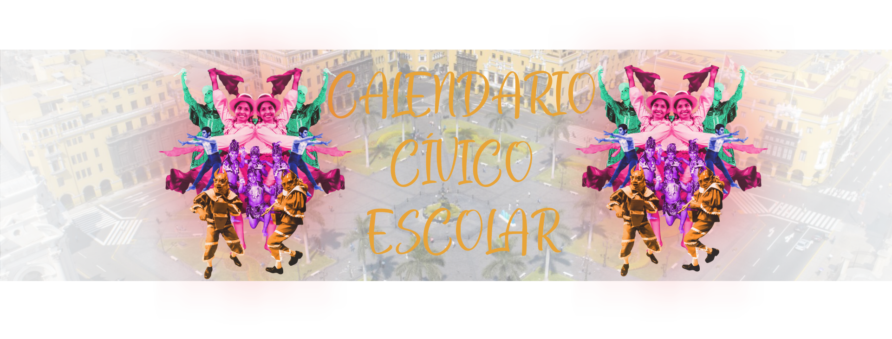
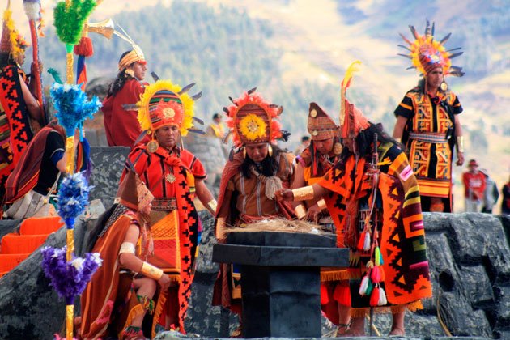

Virgen de la Candelaria
Conocida también como Mamacha Candelaria. Patrona de la ciudad de Puno, los devotos le rinden un merecido homenaje durante 18 días, dentro de las cuales se presentan más de 200 danzas. Ella simboliza la pureza y la fertilidad.
